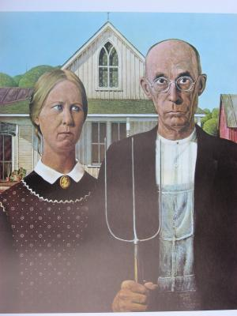
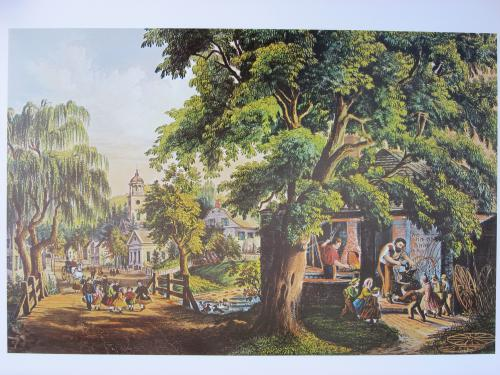
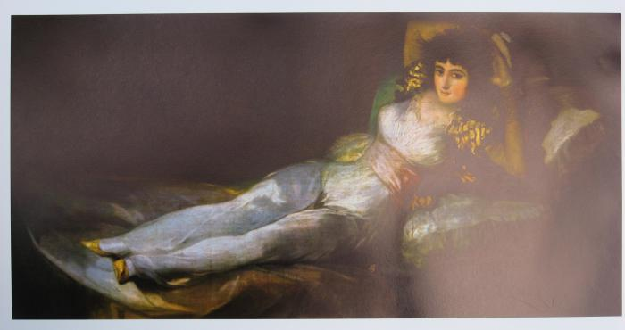
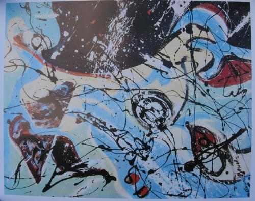
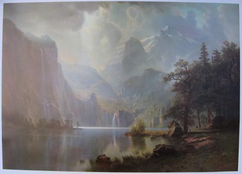
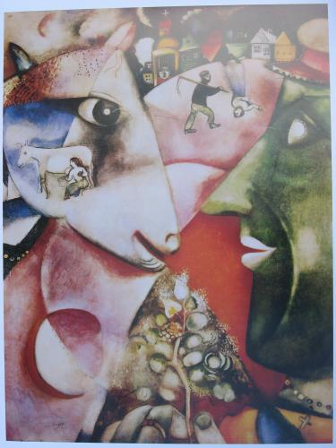

Music: “Hoe Down” by Aaron Copland
Art: “American Gothic” by Grant Wood

Music: “The Anvil Chorus” from the opera "Il Trovatore" by Guiseppe Verdi
Art: “The Village Blacksmith” by Currier & Ives

Music: “Anitra's Dance” from "Peer Gynt" by Edvard Greig
Art: “Maja Clothed” by Francisco Goya

Music: “Maple Leaf Rag” by Scott Joplin
Art: “Composition” by Jackson Pollack

Music: “Finlandia” by Jean Sibelius
Art: “In the Mountains” by Albert Bierstadt

Music: “Theme from the Polovtzian Dances” by Alexander Borodin
Art: “My Village” by Marc Chagall
